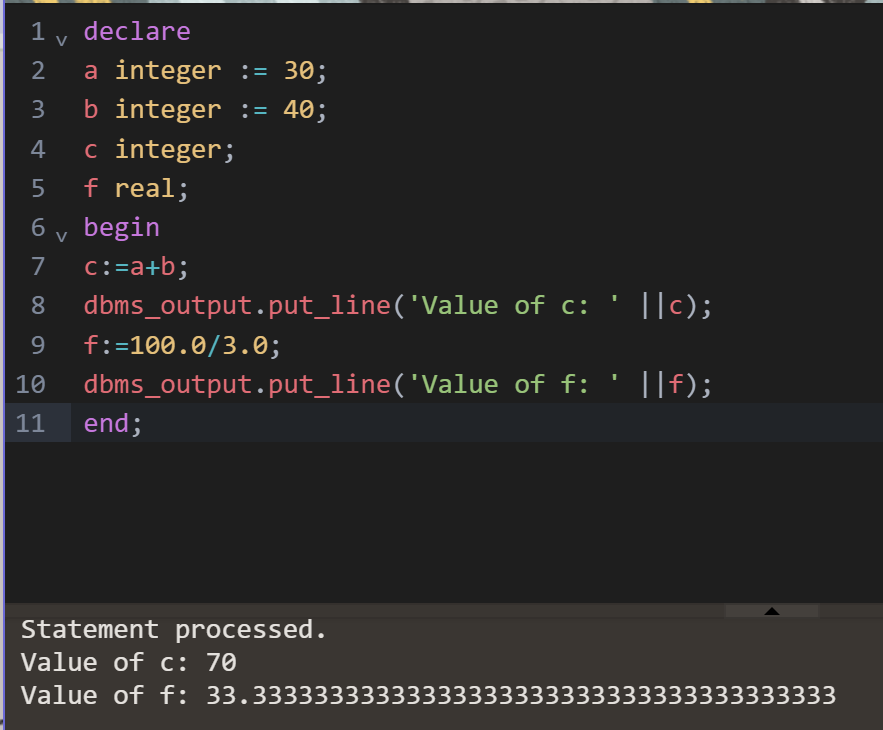
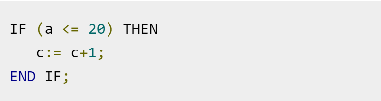
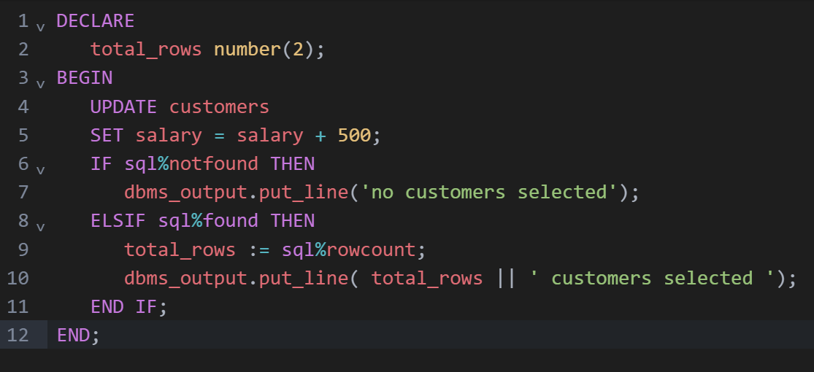
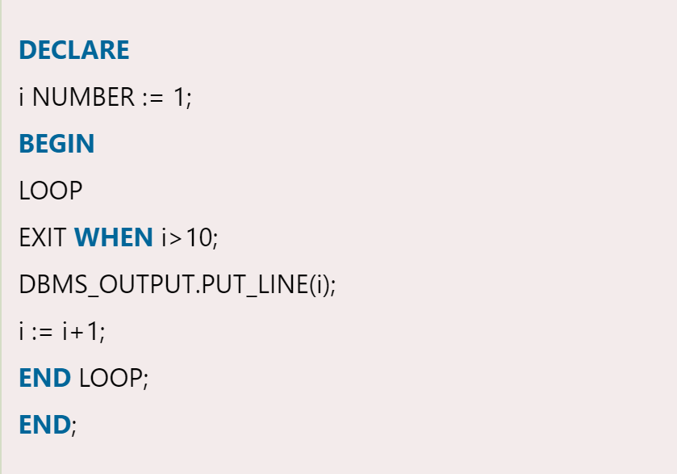
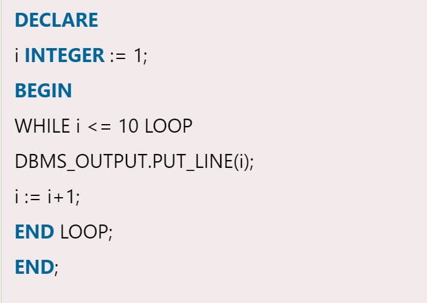
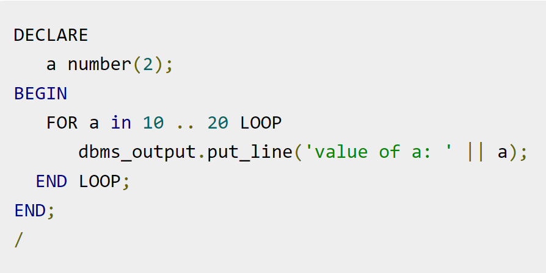

PL/SQL Constants
A constant is a value used in a PL/SQL block that remains unchanged throughout the program. It is a user-defined literal value. It can be declared and used instead of actual values.Syntax:
constant_name CONSTANT datatype := VALUE;
 Constant_name:it is the name of constant just like variable name. The constant word is a reserved word and its value does not change.
VALUE: it is a value which is assigned to a constant when it is declared. It can not be assigned later.
CONTROL STATEMENTS
PL/SQL If
PL/SQL supports the programming language features like conditional statements and iterative statements.Syntax: (IF-THEN statement):
 IF condition
THEN
Statement: {It is executed when condition is true}
END IF;
This syntax is used when you want to execute statements only when condition is TRUE.
Syntax: (IF-THEN-ELSE statement):
IF condition
THEN
{...statements to execute when condition is TRUE...}
ELSE
{...statements to execute when condition is FALSE...}
END IF;
This syntax is used when you want to execute one set of statements when condition is TRUE or a different set of statements when condition is FALSE.

PL/SQL Loop
The PL/SQL loops are used to repeat the execution of one or more statements for specified number of times. These are also known as iterative control statements.Syntax:
LOOP
Sequence of statements;
END LOOP;

PL/SQL Exit Loop
PL/SQL exit loop is used when a set of statements is to be executed at least once before the termination of the loop. There must be an EXIT condition specified in the loop, otherwise the loop will get into an infinite number of iterations. After the occurrence of EXIT condition, the process exits the loop.Syntax:
LOOP
statements;
EXIT;
{or EXIT WHEN condition;}
END LOOP;
PL/SQL While Loop
PL/SQL while loop is used when a set of statements has to be executed as long as a condition is true, the While loop is used. The condition is decided at the beginning of each iteration and continues until the condition becomes false.Syntax:
WHILE (condition)
LOOP statements;
END LOOP;

PL/SQL For Loop
PL/SQL for loop is used when when you want to execute a set of statements for a predetermined number of times. The loop is iterated between the start and end integer values. The counter is always incremented by 1 and once the counter reaches the value of end integer, the loop ends.Syntax:
FOR counter IN initial_value .. final_value LOOP
LOOP statements;
END LOOP;
 initial_value : Start integer value
final_value : End integer value
PL/SQL GOTO Statement
In PL/SQL, GOTO statement makes you able to get an unconditional jump from the GOTO to a specific executable statement label in the same subprogram of the PL/SQL block. Here the label declaration which contains the label_name encapsulated within the '<
 Syntax:
Syntax: